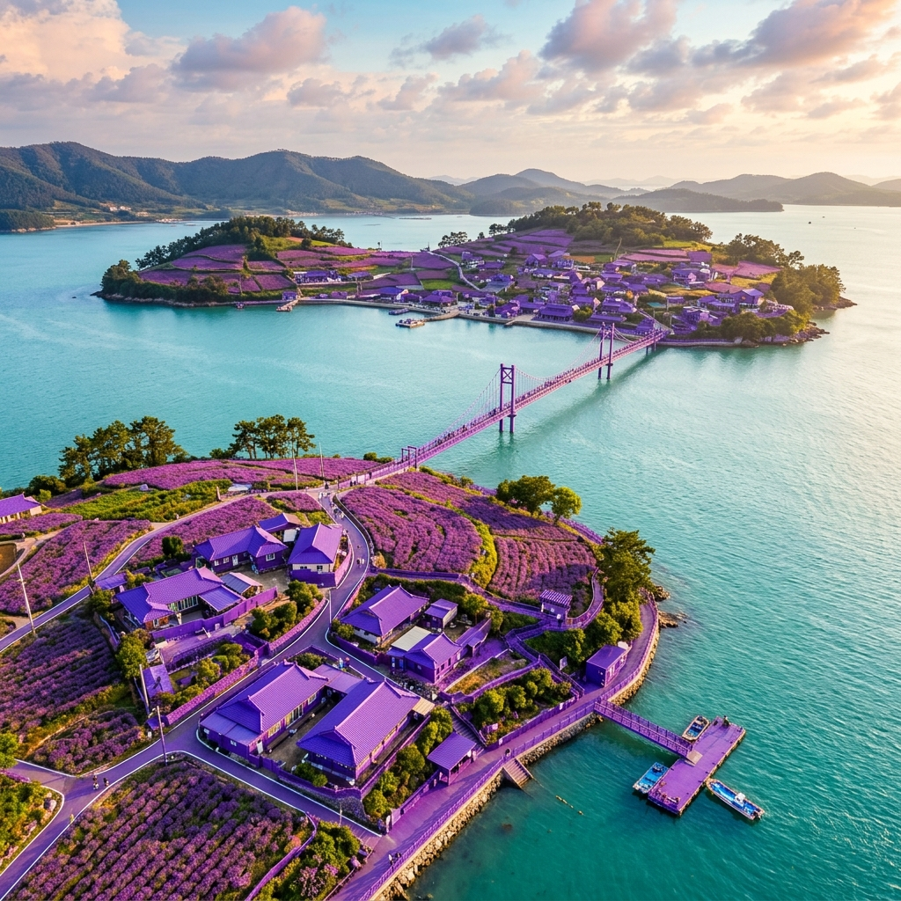
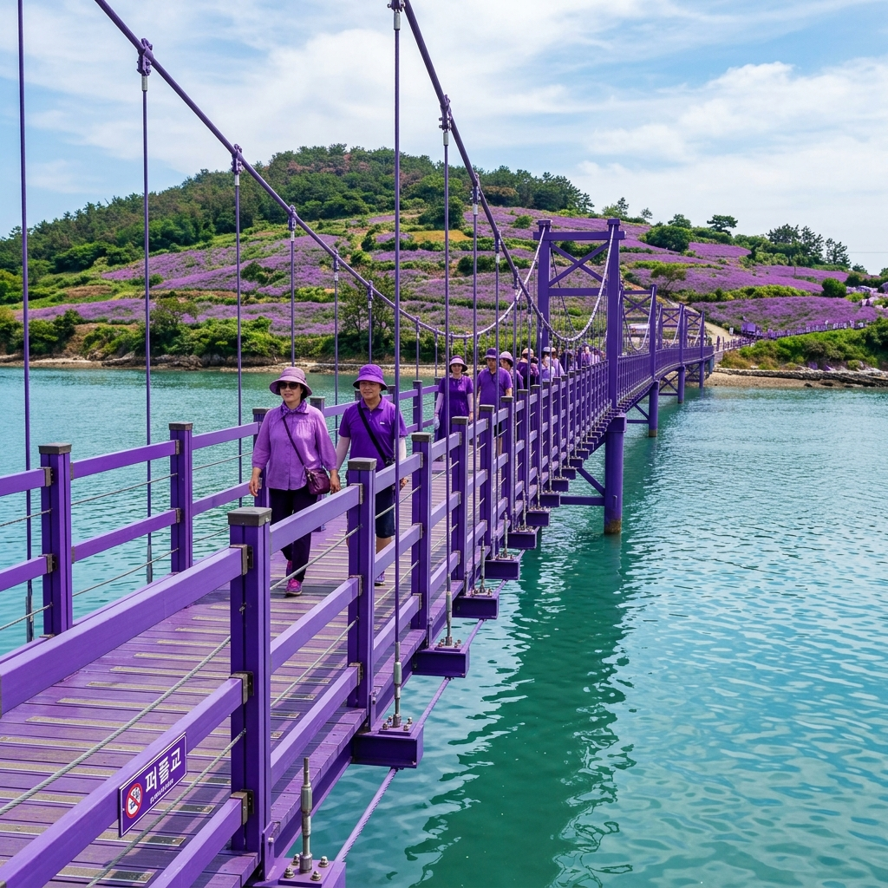

신안 퍼플섬이라는 이름이 정착된 건 2019년입니다.
신안군이 두 섬 주민들과 함께 마을 전체를 보라색으로 칠하기로 결정했고, 이후 외벽·지붕·가로시설물·조경 식물까지 보라색 테마로 통일했습니다.
처음에는 조용한 어촌 마을의 이색적인 실험이었지만, SNS 바이럴 효과로 국내외 여행자들이 몰리면서 지금은 연간 수십만 명이 방문하는 명소가 됐습니다.
두 섬은 안좌도와 해상보행교로 연결됩니다. 안좌도에서 반월도까지 문브릿지(380m), 반월도에서 박지도까지 퍼플교(915m), 다시 박지도에서 안좌도로 돌아오는 퍼플교(547m)가 삼각형 형태로 이어지며, 이 보라색 다리가 퍼플섬 최고의 포토스팟이기도 합니다.
페인트 색만이 아닙니다. 섬 곳곳에 심어진 버들마편초와 도라지꽃이 6월 중순부터 꽃망울을 틔우기 시작하면서 인공 보라와 자연 보라가 한데 어우러집니다.
버들마편초는 가는 줄기에 작은 보라색 꽃송이가 뭉쳐 피는 식물로, 바람에 살랑거리는 모습이 이 섬의 분위기와 완벽하게 어울립니다.
도라지꽃은 한국인에게 친숙한 시골 정취와 보라색의 화사함을 동시에 선사합니다. 두 식물 모두 6월 중하순부터 9월까지 순차적으로 꽃을 피우므로, 6월에 방문하면 가장 신선하고 깨끗한 첫 개화 순간을 목격할 수 있습니다.
또한 7~8월 성수기 대비 인파도 적어, 사진 촬영과 산책 모두 여유롭게 즐길 수 있다는 점이 6월 방문의 가장 큰 매력입니다.

퍼플섬 접근의 핵심은 천사대교입니다.
2019년 개통된 총 연장 10.8km의 천사대교를 통해 압해도에서 암태도, 팔금도, 안좌도까지 차량으로 연결됩니다. 목포 방면에서는 서해안고속도로 목포IC를 나와 압해도 방향으로 달리면 됩니다.
안좌도에서 반월도로 들어갈 때는 차도선(바지선)을 이용하거나 해상보행교를 도보·자전거로 건너는 방법을 선택할 수 있습니다. 차량을 싣는 바지선 운임은 현장에서 확인하시기 바랍니다.
대중교통 이용자는 목포 버스터미널에서 안좌도행 차편을 이용한 후 현지에서 이동합니다. 선박 운항 시간과 편수는 날씨·조석에 따라 바뀔 수 있으므로 방문 전날 신안군청 교통지원과(061-240-8167)에 전화로 확인하는 것이 안전합니다.
안좌도 선착장에서 반월도 방향 선박은 소형 여객선 또는 바지선 형태로 운항합니다.
통상적으로 오전 첫 출발은 8~9시 사이, 막배는 오후 6시 안팎이나 이는 고정 정보가 아니므로 반드시 사전 확인이 필요합니다. 강풍 주의보 발효 시 운항이 중단될 수 있으므로 기상청 날씨 예보도 함께 체크하세요.
차량 동반 방문자는 바지선 만차 시 다음 편을 기다려야 하는 상황이 생길 수 있습니다. 성수기 주말에는 일찍 도착하는 것이 좋으며, 가능하면 차를 안좌도에 두고 해상보행교를 걸어서 건너는 방식이 오히려 빠를 수 있습니다.
퍼플섬 정식 입장료는 어른 5,000원, 청소년 3,000원, 어린이 1,000원이며, 만 65세 이상 어르신은 무료입니다.
그런데 여기 특별한 규칙이 있습니다. 보라색 옷·신발·모자·가방 중 하나라도 착용하면 입장료가 면제됩니다. 단, 보라색의 범위와 인정 여부는 현장 직원이 판단합니다. 작은 보라색 머리끈 하나로는 어려울 수 있고, 상의나 하의처럼 눈에 띄는 아이템을 착용해야 대부분 인정받습니다.
이 덕분에 퍼플섬에는 의도적으로 보라색 코디를 맞춰 오는 관광객이 많습니다. 사진도 더 잘 나오고 입장료도 아끼는 일석이조 전략입니다. 여행 출발 전 옷장에서 보라색 티셔츠 하나를 꼭 챙겨가세요.

반월도에서 915m 퍼플교를 건너면 박지도에 닿습니다.
박지도는 섬 안에서 자전거와 전동카트 대여가 가능해 더욱 활동적인 섬 탐험이 가능합니다. 자전거 대여 요금은 시간당 3,000~5,000원 내외(현장 시세 변동 가능), 전동카트는 1인 기준 2,000~3,000원 수준입니다.
박지도 해안 산책로를 한 바퀴 도는 데는 자전거 기준 30~40분이 소요됩니다. 섬 중앙 언덕 전망대에 오르면 반월도와 안좌도가 한눈에 펼쳐지는 탁 트인 조망을 즐길 수 있습니다. 경사가 있는 언덕 구간을 자전거로 오르기 어렵다면 전동카트가 훨씬 편리합니다.
어르신이나 어린아이를 동반한 가족에게는 전동카트가 특히 인기입니다. 박지도 서쪽 해안은 조용하고 한적해서 이른 아침이나 오후 늦게 방문하면 일몰 포인트로 활용하기도 좋습니다.
안좌도에서 반월도로 들어서는 관문이 문브릿지(380m)입니다.
보름달을 형상화한 아치형 디자인이 특징으로, 다리 위에서 안좌도 방향을 바라보면 다도해가 한눈에 들어옵니다. 반월도 마을로 들어서면 골목과 담벼락이 모두 보라색으로 칠해진 독특한 풍경 속으로 빨려들어 갑니다.
마을 안쪽 언덕을 오르면 퍼플교(915m) 전체를 내려다볼 수 있는 뷰포인트에 닿습니다. 버들마편초와 도라지꽃이 계단식으로 조성된 구간을 지나가며 찍는 사진이 가장 인기 있는 컷입니다. 전체 산책 코스는 1.5~2시간 소요되며 운동화가 필수입니다.
어떤 카메라로 찍어도 잘 나오는 곳이지만, 그중에서도 특히 추천하는 포인트를 알려드립니다.
퍼플교 중간 지점: 오후 4~5시 역광 시간대에 찍으면 보라 다리가 무한 원근감으로 뻗어나가는 극적인 사진이 됩니다. 반월도 언덕 꽃밭: 6월 중하순 버들마편초 만개 시기에 꽃 사이에서 바다를 배경으로 찍는 구도가 가장 아름답습니다. 보라 골목: 반월도 마을 좁은 골목 안에서 양쪽 보라 담벼락을 배경으로 찍으면 색채가 강렬한 감성 사진이 완성됩니다.
이른 아침 안개가 깔린 퍼플교 위에서 촬영하면 몽환적인 분위기의 사진을 얻을 수 있습니다. 오전 7~8시 방문자가 가장 한적하고 빛 방향도 좋습니다.
반월도·박지도 내에는 소규모 식당 몇 곳이 운영됩니다.
신안 앞바다에서 갓 잡아 올린 낙지, 장어, 전어 등 해산물 위주의 메뉴가 주를 이루며 신선도는 기대 이상입니다. 좌석이 많지 않아 성수기 점심에는 대기가 생길 수 있으니, 식사 시간을 12시 이전이나 1시 30분 이후로 조절하면 편합니다.
간식으로는 선착장 근처 매점에서 파는 보라색 아이스크림을 꼭 드셔보세요. 자색 고구마와 블루베리 성분으로 만들어져 먹는 것까지 보라색 테마가 이어집니다. 안좌도 본섬에는 백반집과 횟집이 몇 곳 있어 배를 타기 전후로 식사를 해결하기 편합니다.
6월 중하순의 퍼플섬은 낮 기온이 28~33도에 달합니다.
바닷바람이 있어 체감 온도는 낮지만 직사광선이 강하므로 자외선 차단제·선글라스·챙 넓은 모자는 필수입니다. 보라색 모자를 챙기면 입장료 면제와 사진 퀄리티를 동시에 잡을 수 있습니다.
퍼플교는 바람이 강할 때 상당히 흔들립니다. 가벼운 소지품은 가방 안에 넣어두고, 뛰거나 갑자기 방향을 바꾸는 행동은 주의하세요. 주차는 안좌도 선착장 인근을 이용하며, 성수기 주말에는 오전 일찍 도착하거나 평일 방문을 추천합니다. 반나절~하루 코스로 목포와 연계하면 더욱 알찬 남도 여행이 됩니다.